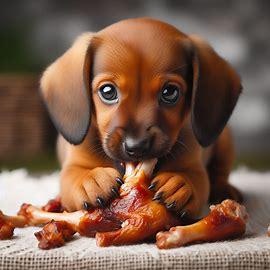

La vida de Tito

Tito, un encantador perro de pelaje marrón, nació en Lima, Perú, en marzo de 2023. Desde su llegada al mundo, demostró ser un espíritu aventurero y travieso. Con el tiempo, se convirtió en el inseparable compañero de David, su leal dueño.
Aunque nació en la bulliciosa capital peruana, Tito pronto se mudó a la apacible ciudad de Ica junto a su familia. Sin embargo, su espíritu libre a menudo lo llevaba a escaparse de casa para explorar los alrededores, dejando a David y su familia con el corazón en vilo hasta que regresaba sano y salvo.
A pesar de su pequeña estatura, Tito irradiaba una energía inagotable y un carácter juguetón. Le encantaba corretear por los parques, jugar con otros perros y recibir mimos de quienes se cruzaban en su camino. Su pasión por la aventura y su curiosidad innata lo convertían en el centro de atención dondequiera que fuera.

En cuanto a sus gustos culinarios, Tito tenía un paladar exigente. No era fanático de las croquetas para perros, pero disfrutaba enormemente de las delicias carnívoras, como las jugosas carnes y el tierno pollo que su familia le proporcionaba con cariño.
A lo largo de los años, Tito se convirtió en mucho más que una mascota para David; se convirtió en su fiel amigo y confidente. Juntos, compartieron innumerables aventuras y momentos de felicidad que quedaron grabados en el corazón de ambos para siempre. Aunque travieso y enérgico, Tito dejó una huella imborrable en la vida de todos los que tuvieron el privilegio de conocerlo.